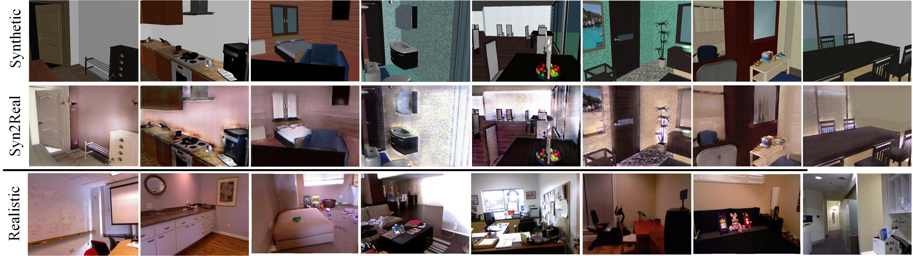
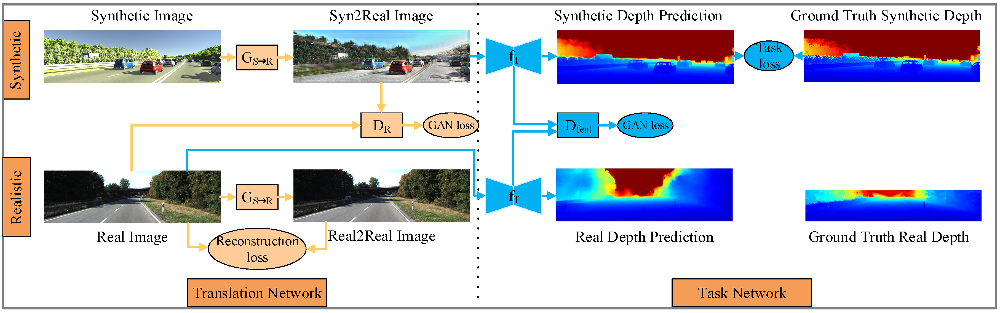

Current methods for single-image depth estimation use training datasets with real image-depth pairs or stereo pairs, which are not easy to acquire. We propose a framework, trained on synthetic imagedepth pairs and unpaired real images, that comprises an image translation network for enhancing realism of input images, followed by a depth prediction network. A key idea is having the first network act as a widespectrum input translator, taking in either synthetic or real images, and ideally producing minimally modified realistic images. This is done via a reconstruction loss when the training input is real, and GAN loss when synthetic, removing the need for heuristic self-regularization. The second network is trained on a task loss for synthetic image-depth pairs, with extra GAN loss to unify real and synthetic feature distributions. Importantly, the framework can be trained end-to-end, leading to good results, even surpassing early deep-learning methods that use real paired data.
